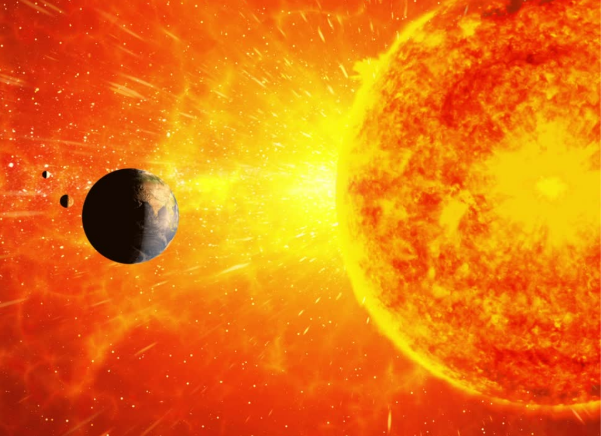

Solar Flare
A solar flare is an intense radiation coming from electromagnetic radiation associated with sunspot. The Carrington Event was the most intense solar flare in recorded history, peaking from 1 to 2 September 1859 during solar cycle 10. Solar Flare can disturb the earth's ionosphere which in turn disturbs radio communication and many more.